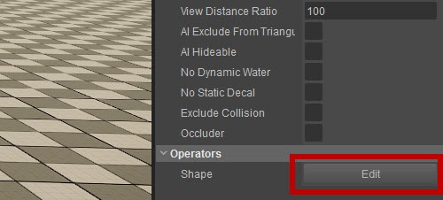
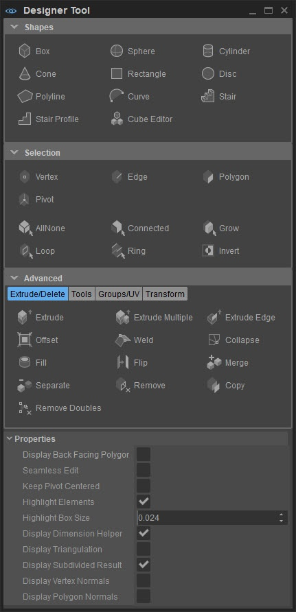

Overview
The Modeling tool is part of the Designer tool and can be opened in three different ways:
- Through Tools -> DesignerTool -> Modeling;
- By right-clicking an existing Designer object and choosing Edit;
- When there is already a shape in your level, by selecting that shape and choosing Shape -> Edit in the Operators section in the Properties tool:

By default all buttons in the DesignerTool are inactive unless a Designer type object is selected in the viewport. The exception here are the tools in the Shapes panel, that allow users to directly create new shapes on the viewport.
The Modeling tool has plenty of options to make and edit solid shapes:

As you can see, the Modeling tool is divided into several sections: Shapes, Selection and Advanced. These are followed by tool-specific properties and finally general properties for the Designer tool.
We'll discuss all of these separately on their own subpages, except for the tool-specific properties, as they change depending on which tool is selected.